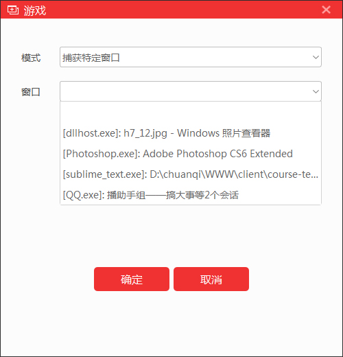
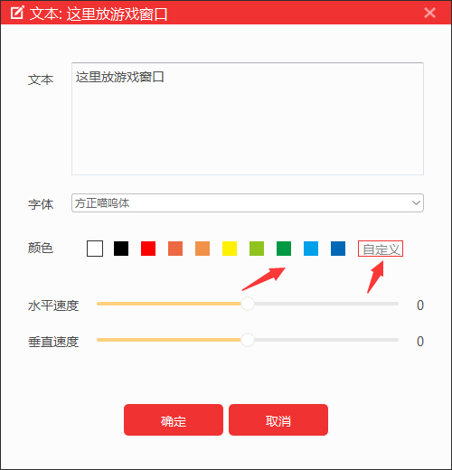
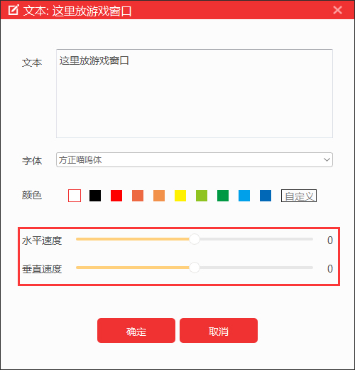

主播可以将桌面、应用程序窗口、摄像头、游戏源、文字、图片等内容以类似于PS作图中的图层形式添加入直播场景（主图）中。添加完成后可根据需求，自由调整直播源的位置和大小。
1 选中直播源区域，单击鼠标右键可对直播素材进行锁定，设置，删除，旋转，翻转，比例适配屏幕，拉伸到全屏，屏幕剧中等设置；
2 在舞台选择直播源素材或者在右侧栏对素材点击右键，用鼠标点击拖动边框调整大小，可等比例改变直播源尺寸；
3 在右侧栏点击隐藏/显示按钮可选择将素材隐藏或显示；
4 右侧栏鼠标长按素材上移/下移鼠标可调整素材的图层；
5 在右侧栏场景中，点最右测按钮可以编辑保存和删除当前场景；
1 声音源可通过外接设备（麦克风）获取声音，并随画面实时展现在直播场景中；
2 选择麦克风：可通过电脑连接多个麦克风，并同时添加进入直播场景中；点击菜单栏的麦克风设置选择需要的麦克风点击确定。
1 视频源可通过外接设备（摄像头、摄像机等）获取拍摄画面，并实时展现在直播场景中。视频源可调整画面方向、一键磨皮美白、设置色值完成绿幕抠图及加入漂亮的边框；
2 选择摄像头：可通过电脑连接多个摄像头，点击菜单栏的摄像头设置。在多个摄像头时可以对设备进行选择，主播可根据需要对摄像头分辨率进行设置；
3 美颜：可以使用一键美颜功能快速设置美颜效果，拖动控制条；
4 使用虚拟背景：虚拟背景设置，主播可选择或自定义将关键的颜色设置为与背景一致，再通过调节相似度平滑和主色漏减少来设置虚拟背景；
5 视频分辨率：可以根据摄像头设置显示分辨率和输出格式；
菜单栏显示器设置，主播可选择需要录制画面的显示器，选择后该显示器的画面将被显示在舞台区域。主播需要两台及以上显示器才可以使用此功能，若只有一台显示器建议使用软件窗口捕捉和自由录屏功能。
1 选择显示器：在下拉菜单中可以选择获取的显示器（多屏幕电脑可选择）；
2 获取鼠标：是否把鼠标显示在直播场景中；
菜单栏软件窗口设置，该功能可以将绝大多数的电脑软件以直播源的形式添加到直播场景中去。主播可以打开需要捕捉的窗口或者游戏，在设置界面选择需要直播的窗口点击确定即可捕捉画面，游戏捕捉需要到全屏操作界面后才能捕捉。
1 选择窗口：在下拉菜单中可以选择需要直播的窗口；
2 获取鼠标：是否把鼠标显示在直播场景中；
全屏游戏必须用捕获游戏源的方式来加入场景，否则观众看到是黑屏。支持市面上绝大多数游戏，帮助主播在进行游戏直播的同时也不牺牲游戏体验效果。
1 捕获任何全屏应用程序：在模式中选择捕获全屏应用程序；
2 捕获特定窗口：在模式中选择捕获特定窗口；

3 获取鼠标：是否把鼠标显示在直播场景中；
选择显示器中的固定区域进行录制直播，将该区域以直播源的形式添加入直播场景中。选中后点击确定区域即可完成添加。选定区域内的屏幕画面出现在直播中，会根据显示器中该区域不同的呈现内容而动态改变；
点击菜单栏常用应用中的自由录屏，鼠标会变成“+”样式，长按鼠标左键截图需要录制的区域后松开鼠标，如下图；确认区域后点击“确定区域”按钮自由录屏捕捉成功，舞台显示该区域。
主播可以选择在直播中加入需要的文字内容，写一些给观众看的标语或广告；
1 选择字体：可根据自己的需要在字体库中选择喜欢的字体；
2 颜色编辑：根据需要可自由编辑字体的颜色，同时调整不透明度数值，可以改变字体和背景的透明程度；

3 滚动速度：调整滚动速度数值，即可给文字加入由右至左或由上至下的滚动效果。数值越大滚动越快，数值为0则默认不滚动；

有自己Logo或者台标或者卖萌图片可以以图片源的方式添加，不愿意让观众看自己电脑操作的可以删除显示器获取放底层图片当桌面，这样既可以直播又可以做其他事情，以防无意识的数据泄露；
1 添加图片来源：选择一张电脑中的图片添加；
2 不透明度：图片直播源添加后的透明程度；
有想要播放和展示出来的视频时，主播可以从本地导入想要播放的视频源，视频可以设置循环播放。
1 添加视频来源：选择电脑中的视频来添加；
2 不透明度：图片直播源添加后的透明程度；